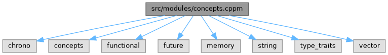

- Generated by
 1.12.0
1.12.0
|
Common System 0.2.0
Common interfaces and patterns for system integration
|
C++20 module partition for common_system concepts. More...
#include <chrono>#include <concepts>#include <functional>#include <future>#include <memory>#include <string>#include <type_traits>#include <vector>
Go to the source code of this file.
Namespaces | |
| namespace | kcenon |
| namespace | kcenon::common |
| Core interfaces. | |
| namespace | kcenon::common::interfaces |
| namespace | kcenon::common::concepts |
| C++20 concepts for compile-time type validation. | |
Concepts | |
| concept | kcenon::common::concepts::Resultable |
| A type that can contain either a value or an error. | |
| concept | kcenon::common::concepts::Unwrappable |
| A type that supports value extraction (unwrapping). | |
| concept | kcenon::common::concepts::Mappable |
| A type that supports monadic map operations. | |
| concept | kcenon::common::concepts::Chainable |
| A type that supports monadic chaining (flatMap/and_then). | |
| concept | kcenon::common::concepts::MonadicResult |
| A complete Result-like type with all monadic operations. | |
| concept | kcenon::common::concepts::OptionalLike |
| A type that represents an optional value (present or absent). | |
| concept | kcenon::common::concepts::ErrorInfo |
| A type that contains error information. | |
| concept | kcenon::common::concepts::ValueOrError |
| A type that holds either a value or error information. | |
| concept | kcenon::common::concepts::Invocable |
| A callable type that can be invoked with given arguments. | |
| concept | kcenon::common::concepts::VoidCallable |
| A callable type that returns void when invoked. | |
| concept | kcenon::common::concepts::ReturnsResult |
| A callable type that returns a value convertible to the specified type. | |
| concept | kcenon::common::concepts::NoexceptCallable |
| A callable type that is marked noexcept. | |
| concept | kcenon::common::concepts::Predicate |
| A callable type that returns a boolean value. | |
| concept | kcenon::common::concepts::UnaryFunction |
| A callable type that takes a single argument. | |
| concept | kcenon::common::concepts::BinaryFunction |
| A callable type that takes two arguments. | |
| concept | kcenon::common::concepts::JobLike |
| A type that satisfies the Job interface requirements. | |
| concept | kcenon::common::concepts::ExecutorLike |
| A type that satisfies the Executor interface requirements. | |
| concept | kcenon::common::concepts::TaskFactory |
| A callable that creates a job or task. | |
| concept | kcenon::common::concepts::AsyncCallable |
| A callable suitable for async execution returning a future. | |
| concept | kcenon::common::concepts::DelayedCallable |
| A callable suitable for delayed execution. | |
| concept | kcenon::common::concepts::EventType |
| A type that can be used as an event in the event bus. | |
| concept | kcenon::common::concepts::EventHandler |
| A callable that can handle events of a specific type. | |
| concept | kcenon::common::concepts::EventFilter |
| A callable that filters events based on criteria. | |
| concept | kcenon::common::concepts::TimestampedEvent |
| An event type that includes a timestamp. | |
| concept | kcenon::common::concepts::NamedEvent |
| An event type that includes a module or source name. | |
| concept | kcenon::common::concepts::ErrorEvent |
| An event type representing an error. | |
| concept | kcenon::common::concepts::MetricEvent |
| An event type representing a metric measurement. | |
| concept | kcenon::common::concepts::ModuleLifecycleEvent |
| An event type representing module lifecycle changes. | |
| concept | kcenon::common::concepts::FullErrorEvent |
| A complete error event with module, message, code, and timestamp. | |
| concept | kcenon::common::concepts::FullMetricEvent |
| A complete metric event with timestamp. | |
| concept | kcenon::common::concepts::EventBusLike |
| A type that satisfies the event bus interface requirements. | |
| concept | kcenon::common::concepts::ServiceInterface |
| A type that can be used as a service interface. | |
| concept | kcenon::common::concepts::ServiceImplementation |
| A type that implements a service interface. | |
| concept | kcenon::common::concepts::ServiceFactory |
| A callable that creates service instances. | |
| concept | kcenon::common::concepts::Validatable |
| A type that can validate its own state. | |
| concept | kcenon::common::concepts::Container |
| A type that satisfies basic container requirements. | |
| concept | kcenon::common::concepts::SequenceContainer |
| A container that provides sequential access and modification. | |
| concept | kcenon::common::concepts::ResizableContainer |
| A container that can be resized. | |
| concept | kcenon::common::concepts::BasicLogger |
| A type that provides basic logging functionality. | |
| concept | kcenon::common::concepts::FlushableLogger |
| A type that supports flushing buffered log messages. | |
| concept | kcenon::common::concepts::CounterMetric |
| A type that supports counter metric operations. | |
| concept | kcenon::common::concepts::GaugeMetric |
| A type that supports gauge metric operations. | |
| concept | kcenon::common::concepts::HistogramMetric |
| A type that supports histogram metric operations. | |
| concept | kcenon::common::concepts::Sendable |
| A type that can send data. | |
| concept | kcenon::common::concepts::Receivable |
| A type that can receive data. | |
| concept | kcenon::common::concepts::TransportClient |
| A type that represents any transport client (HTTP or UDP). | |
C++20 module partition for common_system concepts.
This module partition exports all C++20 concepts:
Part of the kcenon.common module.
Definition in file concepts.cppm.